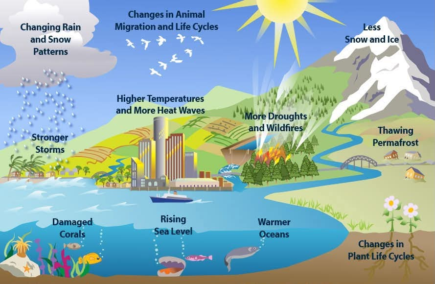
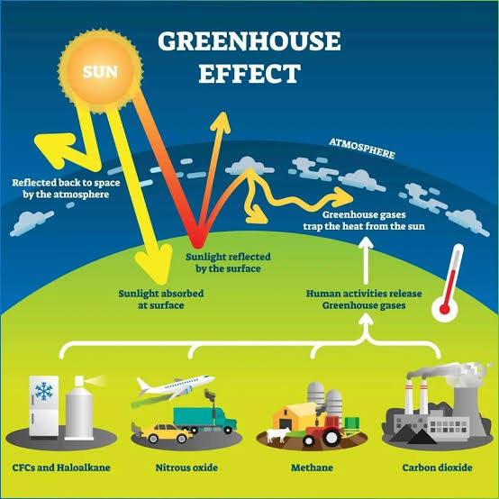
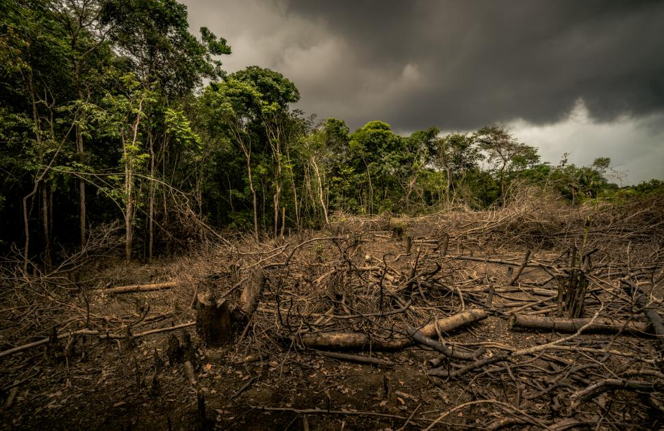
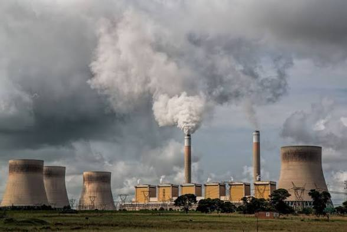

Causes of Global Warming
Global warming happens when the Earth slowly gets hotter over time. This is mostly caused by things people do every day, like driving cars, using a lot of electricity, and cutting down trees. These activities release gases into the air that trap heat from the sun. It’s like putting an extra blanket around the Earth—too many blankets make it too warm!

Greenhouse Gases
Greenhouse gases are special gases in the air that act like a blanket around our planet. They trap heat from the sun and keep Earth warm enough for us to live. But when there are too many greenhouse gases—like carbon dioxide from cars or methane from waste—the “blanket” gets too thick. This makes the Earth hotter than normal, causing global warming.

Deforestation & Climate Change
Deforestation means cutting down too many trees in forests. Trees are very important because they help clean the air by taking in carbon dioxide and giving us oxygen. When trees are cut down, there are fewer of them to help balance the air. This causes more harmful gases to stay in the atmosphere, which makes climate change worse.

Human Activities & Industrial Impact
Humans do many things that affect the environment, especially through industries. Factories, cars, and machines burn fuel like coal and oil, which releases harmful gases into the air. These gases not only cause pollution but also add to global warming. The more we rely on these activities, the more we impact our planet.